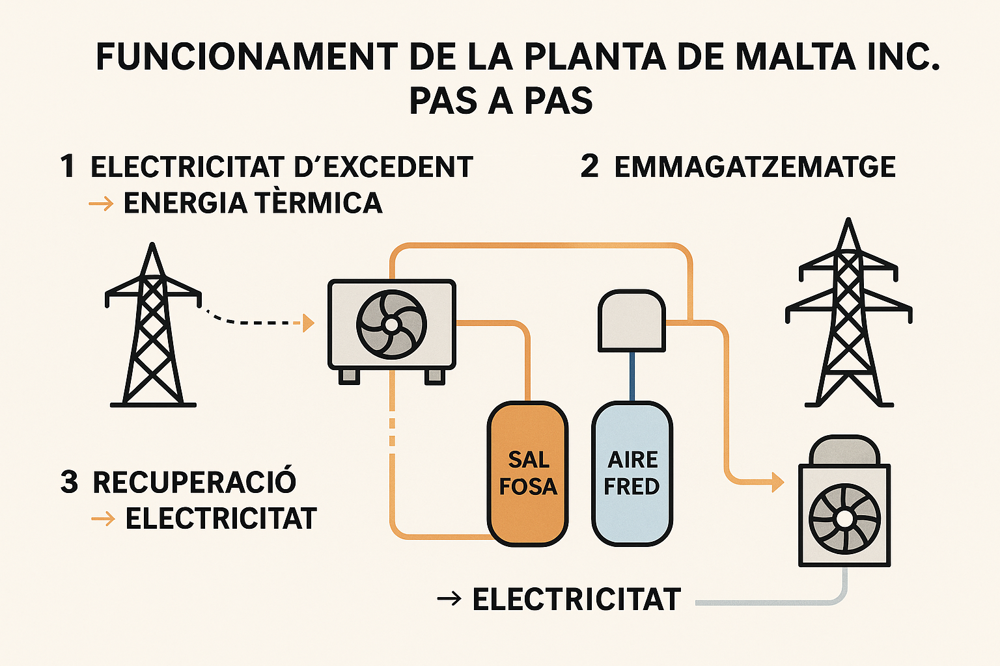

Estabilitat de la Xarxa Elèctrica Interconnectada
Aquest document explica com la xarxa elèctrica d’Espanya (i Europa) pot suportar desequilibris importants entre la generació i el consum sense col·lapsar-se immediatament.
1. Què és la inèrcia del sistema?
La inèrcia és l’energia cinètica emmagatzemada en els components mecànics en rotació de les grans centrals elèctriques (com turbines de gas, vapor, hidràuliques o nuclears).
- Quan hi ha un dèficit de generació (consum > producció), aquesta inèrcia actua com un "coixí" d’energia: els generadors giren una mica més lentament i compensen durant uns segons.
- Quan hi ha un excés de generació (producció > consum), els generadors s'acceleren lleugerament.
- Les fonts renovables com l’eòlica i la solar (amb inversors electrònics) no aporten inèrcia física, la qual cosa fa més difícil mantenir l’estabilitat del sistema.
La inèrcia proporciona segons crucials perquè els sistemes automàtics de control actuïn abans que la freqüència es descontroli.
2. Sistemes de control automàtic de la freqüència
Quan la inèrcia no és suficient, entren en joc tres nivells de control que regulen la freqüència de la xarxa (idealment 50.00 Hz a Europa).
2.1 Regulació Primària – FCR (Frequency Containment Reserve)
- Objectiu: Contenir la desviació inicial de la freqüència de manera immediata.
- Temps de resposta: Segons.
- Com funciona: Tots els generadors participants ajusten automàticament (i lleugerament) la seva potència segons la desviació de la freqüència.
- Acció local i automàtica: No coordinada per cap operador; és descentralitzada.
2.2 Regulació Secundària – aFRR (Automatic Frequency Restoration Reserve)
- Objectiu: Restablir la freqüència a 50.00 Hz i recuperar els fluxos d’energia previstos entre països.
- Temps de resposta: De desenes de segons fins a 5 minuts.
- Com funciona: El gestor de la xarxa (com REE a Espanya) envia ordres automàtiques a les centrals perquè augmentin o redueixin la seva generació.
2.3 Regulació Terciària – RR (Replacement Reserve)
- Objectiu: Substituir la regulació secundària i gestionar desequilibris més prolongats o grans.
- Temps de resposta: Minuts a hores.
- Com funciona: Activació manual o semiautomàtica de més centrals o gestió de la demanda.
Nota: Aquestes tres capes treballen conjuntament per evitar que la freqüència s’allunyi massa dels valors segurs (entre 49.5 Hz i 50.5 Hz).
3. Per què varia la freqüència?
La freqüència és l’indicador en temps real de l’equilibri entre generació i consum.
- Si la generació és major que el consum, la freqüència puja.
- Si la generació és menor que el consum, la freqüència baixa.
La demanda i la generació fluctuen contínuament (ex: electrodomèstics que s'encenen, núvols que tapen plaques solars, etc.), per tant, la freqüència també varia constantment.
4. En resum
- La inèrcia física de les màquines ofereix estabilitat immediata.
- Els tres sistemes de control (FCR, aFRR, RR) actuen en diferents escales de temps per mantenir l’equilibri.
- Només si aquests mecanismes fallen, el sistema pot arribar a desconnectar parts de la xarxa per protegir-se.
Malta Inc. pot recollir excés energia fotovoltaica en sals foses a Puertollano (2025-2030)

Informació actualitzada a 29 d’abril de 2025.